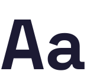

1 · Le symbole
Une arche qui abrite une étoile naissante
Une nova est une étoile qui s’allume soudain dans le ciel : le point clair, au cœur du symbole. Autour, l’arche figure l’atelier, le studio où les idées prennent forme. Elle dessine aussi le « n » de nova.
- Tuile aux angles arrondis : le symbole sert aussi d’avatar et d’icône d’application.
- Formes pleines et épaisses : il reste lisible jusqu’à 16 pixels.
2 · Le logo
Trois versions, selon le fond
Couleur · sur fond blanc ou papier. C’est la version principale, celle des documents RH.
Négatif · sur fond Nuit ou sur une photo sombre.
Une couleur · impression en noir, tampon, gravure.
3 · Construction
Une grille de 64 et une marge de sécurité
Tuile de 64 × 64 (rayon 15). Arche : jambages de 9, centre à mi-largeur. Étoile : rayon 4,6, posée à 40 du haut.
Autour du logo, laisser libre au moins un quart de la hauteur du symbole. Taille minimale : 24 px de haut pour le logo, 16 px pour le symbole seul.
4 · Couleurs
Une encre, une lumière
#1C1A33Textes, fonds sombres. 16,9:1 sur blanc.
#F25440Symbole, grands titres, accents. 3,4:1 sur blanc : jamais pour un petit texte.
#C93A28Liens et petits textes d’accent. 5,1:1 sur blanc.
#FFE3D6Fonds d’accent, « studio » en négatif. 13,8:1 avec Nuit.
#FBF7F2Fond des pages et des supports imprimés.
5 · Typographie
Space Grotesk, une grotesque au caractère technique

Police libre (SIL Open Font License), dessinée par Florian Karsten. Le logo : « nova » en Bold, « studio » en Regular, approche légèrement resserrée.
6 · Applications
Le logo dans la vie de l’entreprise
Attestation employeur
En-tête des documents RH générés par Teamora (contrats, attestations, certificats).
Directrice générale
12 rue de la Paix, 75002 Paris
Carte de visite, fond Nuit (personnage fictif de la démo).
7 · À éviter
Le logo ne se modifie pas
Déformer ou étirer.
Changer les couleurs.
Ajouter une ombre, le poser sur un fond chargé.
8 · Fichiers
À télécharger


Dans la démo de Teamora, le logo couleur est déjà enregistré dans Paramètres › Entreprise : il s’affiche en tête des documents. On peut le remplacer ou le retirer au même endroit.